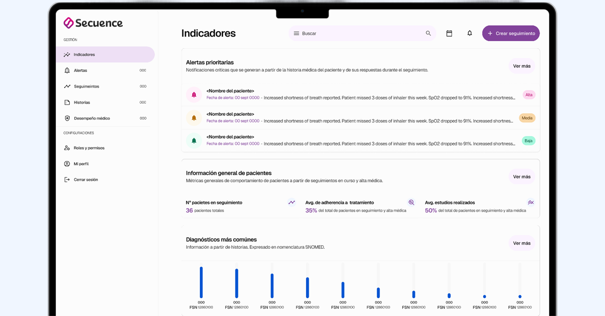

Alertas prioritarias
Notificaciones críticas que se generan a partir de la historia médica del paciente y de sus respuestas durante el seguimiento.
info
¡Bienvenido al sistema de seguimiento Secuence!
infoInfo
monitoring
Próximos seguimientos
Hay 8 próximos seguimientos
Desempeño médico
Visualizar el desempeño médico así como el nivel de satisfacción de los pacientes hacia la atención brindada (NPS).
Médico
Pacientes atendidos
Alertas por atender
Seguimientos en curso
Adherencia a tratamiento (%)
Estudios realizados (%)
NPS
Acción
No se encontraron médicos para esa búsqueda.
Nº pacientes en seguimiento
show_chart
0pacientes totales
Distribución de alerta
Alta0
Media0
Baja0
Avg. de adherencia a tratamiento
medication
0%del total de pacientes en seguimiento y alta médica
Tratamientos iniciados
Sin iniciar0
Iniciados0
Avg. estudios realizados
stacked_line_chart
0%del total de pacientes en seguimiento y alta médica
Estudios realizados
Sin realizar0
Realizados0
Alertas prioritarias
Notificaciones críticas que se generan a partir de la historia médica del paciente y de sus respuestas durante el seguimiento.
notification_importantAlta: Alto riesgo de complicaciones
notificationsMedia: Ameritan atención médica
notificationsBaja: Evolución eficiente
infoInfo: Notificación informativa
No se encontraron alertas para esa búsqueda.
Distribución de alertas
Alta0
Media0
Baja0
event_upcoming30
Próximos seguimientos
pacientes totales
monitoring21
En seguimiento
pacientes totales
verified65%
% de altas médicas
a partir de protocolo de seguimiento.
Paciente
Último seguimiento
Próximo seguimiento
Última consulta
Alerta
NPS
Acción
No se encontraron seguimientos para esa búsqueda.
Usuarios
Gestione los usuarios de su equipo, sus roles y los permisos de acceso a la plataforma.
Usuario
Correo
Estado
Rol
Fecha de creación
Acción
No se encontraron usuarios para esa búsqueda.
Nuevo usuario
Médico
Foto de licencia o título
cloud_upload
Haga click para subir archivos o arrastre archivos aquí
Sólo archivos PDF, JPG o JPEG (máximo 10MB)
Permisos
En esta sección, podrá asignar los permisos al usuario que está registrando en el sistema. Es importante destacar que estos permisos son exclusivamente para el nuevo usuario al que está registrando.
Seguimientos
Gestione permisos para crear nuevos seguimientos, editar seguimeientos existentes y acceder a informes generados a partir de la historia clínica del paciente y sus respuestas a seguimientos.
Historias médicas
Gestione los permisos para crear nuevas historia y ver historias de pacientes.
Evoluciones médicas
Gestione los permisos de acceso a evoluciones médicas de los pacientes de manera eficiente. Otorgue permisos para crear nuevas evoluciones y ver evoluciones existentes de pacientes.
Analítica y métricas
Gestione los permisos de acceso a analíticas y métricas. Ver métricas de desempeño de otros médicos (número de pacientes atendidos, NPS, números de pacientes en seguimeintos, entre otros).
Administración
Asigne permisos para que usuario pueda: crear nuevos usuarios en el sistema, eliminar usuarios y asignar o denegar permisos (no aplica para roles de pacientes).
Información del centro de salud
Datos del centro o institución donde ejerce su actividad clínica.
Logo
domain
Nombre del centro de salud
Clínica Secuence
public
País
Colombia
location_on
Dirección
Cra. 7 #71-21, Bogotá
call
Teléfono
+57 601 742 0000
language
Sitio web
www.clinicasecuence.co
Información personal
Cómo aparece su identidad dentro de la plataforma.
Foto de perfil
Firma
Sello
badge
Nombres
Carlos
badge
Apellidos
Méndez
Cuenta activa
Al desactivarla, este usuario no podrá iniciar sesión ni recibir seguimientos.
Información profesional
Credenciales y datos de contacto de su ejercicio médico.
medical_services
Especialización
Cardiología
public
Principal país de ejercicio
Colombia
call
Teléfono
+57 300 555 0142
mail
Correo
carlos.mendez@secuence.co
language
Sitio web personal
www.drcarlosmendez.co
badge
Número de licencia
RM-48213
Foto de licencia médica
Configuración de cuenta
Rol asignado y acceso a la plataforma.
verified_user
Rol
stethoscopeMédico
lock
Contraseña
Última actualización: 12 may. 2026
Sección en construcción
Esta vista todavía no tiene un diseño definido. Selecciona Indicadores o Roles y permisos para ver las pantallas disponibles.
Hola Dr. Carlos Méndez,
¡Bienvenido a Secuence!
Su plataforma de monitoreo y seguimiento de pacientes
¡Nos complace darle la bienvenida a Secuence!
Ahora cuenta con una plataforma diseñada para ayudarle a dar continuidad al cuidado de sus pacientes de forma más organizada, eficiente y basada en información relevante para apoyar sus decisiones clínicas. Con Secuence podrá:
- Gestionar pacientes desde un solo lugar
- Crear y programar seguimientos
- Registrar historias médicas y evoluciones clínicas
- Recibir alertas sobre cambios relevantes en pacientes
- Visualizar indicadores clínicos y operativos
- Monitorear adherencia a tratamientos y evolución médica
hub
Gestión Centralizada
Administre toda la información de sus pacientes en un solo lugar
monitoring
Seguimientos Programados
Configure protocolos y automatice el monitoreo continuo de sus pacientes
insights
Reportes Inteligentes
Reciba análisis que respaldan sus decisiones clínicas

Su panel principal incluye la sección Indicadores, donde podrás visualizar métricas clave relacionadas con:
Alertas prioritarias
Notificaciones generadas a partir de cambios relevantes reportados durante los seguimientos de pacientes.
Pacientes en seguimiento
Visualización del número de pacientes actualmente monitoreados.
Adherencia al tratamiento
Indicadores relacionados con el cumplimiento terapéutico reportado por sus pacientes.
Estudios realizados
Métricas sobre cumplimiento de estudios, procedimientos o exámenes médicos indicados.
Diagnósticos más comunes
Tendencias clínicas registradas en historias médicas.
NPS y satisfacción del paciente
Medición de percepción y experiencia de atención médica.
Altas médicas
Porcentaje de pacientes que completaron exitosamente su seguimiento.
Próximos seguimientos
Resumen de monitoreos programados pendientes.
Desempeño médico
Métricas operativas y clínicas del equipo médico (disponible según permisos asignados).
Estas métricas le permitirán mantener una visión centralizada del estado de sus pacientes y facilitar la identificación temprana de situaciones que requieren atención.
Para comenzar a utilizar Secuence, le recomendamos realizar estas primeras acciones:
- Complete su perfil profesional
- Agregue su primer paciente
- Configure un seguimiento
- Explore la sección Indicadores para visualizar el estado general de sus pacientes
Mientras más información registre, más útil será el monitoreo y análisis generado por la plataforma.
Si necesita ayuda durante tu experiencia en Secuence, nuestro equipo estará disponible para apoyarle a través de nuestro correo hisecuence@gmail.com
¡Bienvenido a Secuence!
Hola Dr. Carlos Méndez,
¡Bienvenido a Secuence!
Su plataforma de monitoreo y seguimiento de pacientes
¡Nos complace darle la bienvenida a Secuence!
Ahora cuentas con una plataforma diseñada para ayudar a clínicas y organizaciones médicas a centralizar el monitoreo de pacientes, supervisar el desempeño del equipo médico y obtener mayor visibilidad sobre la continuidad del cuidado clínico. Con Secuence podrá:
- Supervisar pacientes en seguimiento desde un solo lugar
- Monitorear indicadores clínicos y operativos en tiempo real
- Visualizar alertas relevantes generadas durante seguimientos
- Medir adherencia a tratamientos y cumplimiento de estudios médicos
hub
Integración con los softwares de su ecosistema*
Integre Secuence con sus sistemas de gestión clínica. *Casos específicos
star
Evaluar desempeño médico
A través de métrica NPS (Net Promoter Score) y carga operativa del equipo médico.
manage_accounts
Gestión de roles
Gestione usuarios, roles y permisos según la estructura clínica.

Desde la sección Indicadores podrás acceder a métricas clave como:
- Pacientes activos en seguimiento
- Alertas clínicas pendientes de atención
- Adherencia promedio a tratamientos
- Porcentaje de estudios realizados
- Diagnósticos más frecuentes
- Satisfacción de pacientes (NPS)
- Porcentaje de altas médicas
- Desempeño individual del equipo médico
- Carga operativa por profesional
Estas métricas te permitirán identificar oportunidades de mejora, detectar riesgos operativos y mantener una visión centralizada sobre el estado clínico y operativo de tu organización.
Para comenzar a configurar su centro de salud en Secuence, te recomendamos:
- Completar la información de su organización
- Agregar usuarios y asignar roles y permisos
- Explorar la sección Indicadores para monitorear la actividad clínica y operativa
Una configuración adecuada permitirá obtener métricas más precisas y mejorar la visibilidad sobre el desempeño clínico de tu equipo.
Si necesita ayuda durante tu experiencia en Secuence, nuestro equipo estará disponible para apoyarle a través de nuestro correo hisecuence@gmail.com
¡Bienvenido a Secuence!
Pacientes
Secuence podrá entregarle informes acerca de la evolución de sus pacientes a partir de la información cargada en las historias y evoluciones. Procure ser lo más explícito posible en la información de cada paciente.
No se encontraron pacientes para esa búsqueda.